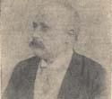
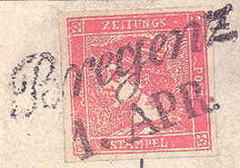
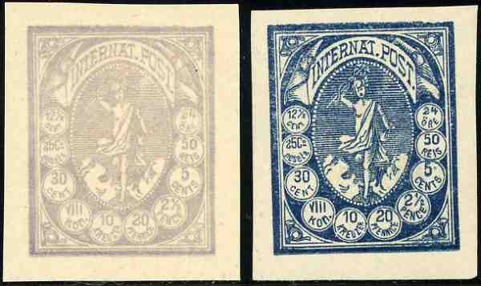
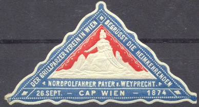

On this forgery, Friedl made a mistake in the cancel by writing 'LESPEDIZIONE' while it should have been 'J.R.SPEDIZIONE': source http://www.philaforum.com/forum
Note: on my website many of the
pictures can not be seen! They are of course present in the
catalogue;
contact me if you want to purchase the catalogue.

Sigmund Friedl was born in 1851 in Leibnik (Lipnik, Moravia). He opened a stamp museum in Vienna (Austria) with his brother Rudolf and was quite famous. For example, he sold the unique Tre Skilling Banco yellow misprint to the stamp collector Ferrary for 5000 Gulden. He also organised the 1881 Vienna Philatelic Exhibition and issued the first stamp catalogue in Austria. He died in 1914. His son Otto Friedl emigrated to the United States.
However, he also made dangerous forgeries of the first newspaper stamps of Austria. Furthermore, he applied private perforations to imperforate Austrian stamps. According to V.E.Tyler, he also sold forgeries of the 25 c and 50 c of the Cubierta stamps of Colombia (distinguishing characteristics are given in Le Timbre Poste by Moens No. 136, page 29 April 1874) and forgeries of Rumania (5 b blue and 5 b red of the 1876 and 1879 issues). He also sold Jassy forgeries of the 27 pa and 81 pa of Moldavia. If anyone has more information on these forgeries, please contact me!
Sigmund Friedl made (or at least sold) forgeries of the 'Zinnoberroten Merkur' stamp of Austria. He pretended to have 'found' a large number of these stamps in 1890. Another lucky find in 1895 enabled him to offer all three rare colors. He also offered genuine blue newspaper stamps with his forged cancels applied to it (see http://www.philaforum.com/forum). If my information is correct this is a photo-lithographed forgery. It exists unused and with cancel:

On this forgery, Friedl made a mistake in the cancel by writing
'LESPEDIZIONE' while it should have been 'J.R.SPEDIZIONE': source
http://www.philaforum.com/forum
After these forgeries were discovered, Friedl was forced to refund his customers after a court trial (1899, source V.E.Tyler).
I've seen so-called Friedl essays for Hungary in the above design
in the values 1 kr red, 2 kr yellow, 3 kr green, 5 kr red, 10 kr
blue, 15 kr black, 25 kr blue and 50 kr brown.
Black Friedl reprint of the Danube stamps. Block of four.
A Friedl essay for Austria, inscription 'RECOMMANDO'.

Two other Friedl essays 'INTERNAT. POST' with value inscription
in 10 different currencies. I've seen a minisheet with 3 stamps
(3 different shades) with inscription 'ESSAI der POST-BRIEFMARKE
Project. & ausgefuhrt von Siegmund Friedl, Wien'.
Stamps and a label for Franz-Joseph Land during a North-Pole expedition. These labels are probably made for or by Friedl for philatelic purposes:


A local stamp for Vienna was also prepared by Friedl. The stamp has inscription 'Com. freimarke d. St. Wien 3 kr'. In the corners the letters 'F.M.C.W.' are printed (source Le Timbre Poste by Moens, 1874 No. 137, page 36). He also seems to have made 'Cubiertas' forgeries of Colombia (same source).

Friedl also applied un-official perforations to imperforate
stamps of Austria. This could be one of his 'products'.
(Reduced sizes)
Leitmeritz stamps: In this lion design I have seen 1 Kr blue, 2 Kr red, 3 Kr yellow, 4 Kr brown (orange), 5 Kr green, 10 Kr red, 12 Kr blue, 15 Kr lilac, 20 Kr brown and 50 Kr green. The value inscription is always in black. I have also seen a yellow stamp without any value or 'kr'. A 25 Kr blue also exist according to http://www.czechoslovakphilately.org/pdf/1976_09_Nov.pdf. These stamps were prepared by Dr.Elb of Dresden, but never used. The 'Almanach du Timbre-Poste' of J.B.Moens (1886) states that 'M.Sig Friedl, donne l'histoire plus ou moins vraie des timbres de Leitmeritz. Elle ne rencontre qu'incrédulité' ('Mr. Sigmund Friedl gives the more or less true history of the stamps of Leitmeritz. It only encounters disbelief'). This seems to indicate that Moens thougth these stamps were made by Sigmund Friedl.
More information:
http://en.wikipedia.org/wiki/Sigmund_Friedl
'Philatelic forgers, their lives and works', by V.E.Tyler.
http://www.austrianphilately.com/reprints/vpos.htm
{kind=link}